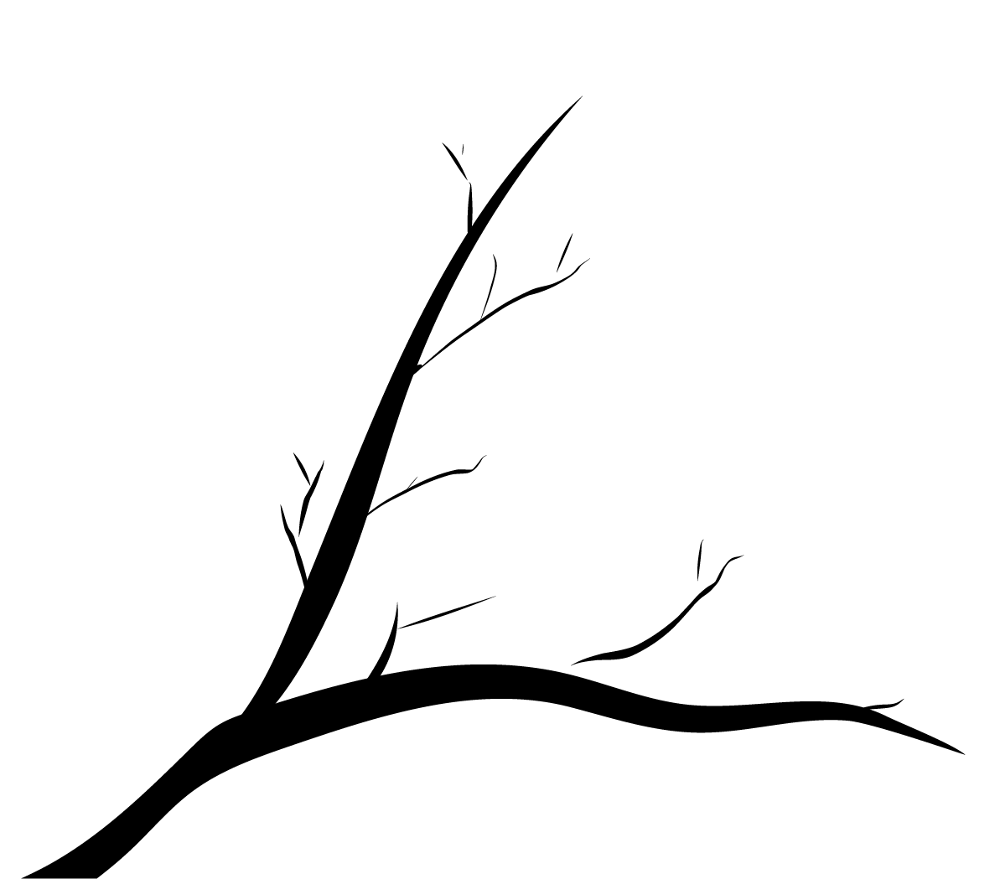

Cherry blossoms, or sakura, have always been in a significant position in Japanese culture, which symbolizes birth and death, beauty and violence.
In order to better understand the meaning and significance of the experience of cherry blossom viewing (hanami) in Japanese culture, I collected a tremendous amount of reviews from TripAdvisor, and found the most frequently used vocabulary, which I believe indicates what they care most about when it comes to hanami. Here are some of my findings.
Location/Environment Attentive
From the list of the most frequently used words, we can see a lot of words that are used to specify the location, such as “名所 (famous place)”, “寺 (shrine/temple)”, “公園 (park)”, and the names of cities. It’s not hard to infer that the location where the activity takes place is the core of the experience. Even if it means they have to squeeze in with all the other hanami goers in an outrageously crowded place, they would still value the experience of hanami at a popular spot.
Urban over Country ; Controlled over Natural
Out of 100 most popular hanami spots that received the most reviews on TripAdvisor, I found that the spots in urban settings significantly outnumbered those in rural settings, while those in controlled environments, such as parks, shrines, and gardens, also outnumbered those in natural settings. We can find some clues from another frequent word “並”, which means lining up. However, this word is mostly used in the context of “桜並木”, which means a row of cherry blossom trees. The beauty of cherry blossoms is maximized when they are in abundance without any other species of trees, which supposedly should be more easily realized in a controlled environment.
Silence in Mind Overcomes Noisy Crowds
Even though most of the hanimi goers experience hanami in a crowded spot located in major urban areas such as Kanto and Kinki, they are still able to enjoy(楽しむ) the beauty(綺麗) of sakura and find the silence(静か) in mind as written in one of the reviews, “The hustle and bustle of the city is forgotten.”
（“都会の喧騒を忘れてまったり。”）